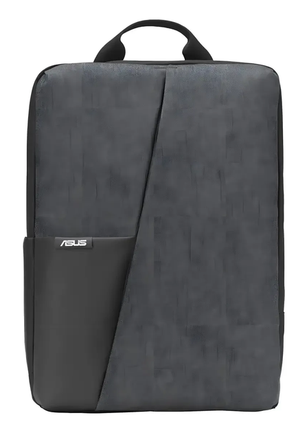

PLATAFORMAASUS AP4600
PROTOTIPO DIGITAL · DISTRIBUCIÓN DE CARGA EN 2 EJES
¿La carga está equilibrada?
Ajusta el peso de las cuatro zonas y observa, en tiempo real, el estado de la mochila y la acción recomendada.
VARIABLE DE DECISIÓN
ΔLat = |Izq − Der| ÷ Total × 100
ΔVert = |Sup − Inf| ÷ Total × 100
ΔVert = |Sup − Inf| ÷ Total × 100
DIMENSIONES45 × 32 × 8 cm
MASA EN VACÍO450 g
RANGO DE PRUEBA1–10 kg
01 · ENTRADAS
Carga por zona
Desliza o escribe el peso estimado de cada cuadrante.
Z1 Superior izquierda
Z2 Superior derecha
Z3 Inferior izquierda
Z4 Inferior derecha
02 · MAPA DE CARGA
Mochila monitoreada

Z11,2525,0 %
Z21,2525,0 %
Z31,2525,0 %
Z41,2525,0 %
+IDEAL
CENTRO ACTUAL
IZQUIERDA2,50 kg
DERECHA2,50 kg
SUPERIOR2,50 kg
INFERIOR2,50 kg
03 · RESULTADO
Diagnóstico técnico
ESTADO ACTUAL
Equilibrada
Mantener la distribución actual: el centro de presión está próximo al centro ideal.
Δ lateral0,0%
Δ vertical0,0%
Carga total5,00 kg
DominanciaCentrada
< 10%Equilibrada
10–15%Mejorable
> 15%Desequilibrada
La carga total debe estar entre 1 y 10 kg para clasificarla.
04 · MONITOREO EN TIEMPO REAL
Lecturas de los cuatro sensores
SIMULACIÓN ACTIVA2 Hzcada 500 ms
−20 sAhora
TRAZABILIDAD DEL ALGORITMO
Banco de 10 escenarios
Selecciona una fila para llevar sus datos al simulador y comprobar la clasificación.
RESULTADO10/10clasificaciones correctas
| Escenario | Z1 | Z2 | Z3 | Z4 | Carga total | ΔLat | ΔVert | Esperado | Calculado | Verificación |
|---|
Consejo para la presentación: usa E03, E04, E07 y E08 para mostrar el cambio justo antes y después de cada umbral.
LÓGICA DE DECISIÓN
Una regla simple, visible y verificable.
El algoritmo compara izquierda contra derecha y superior contra inferior. El estado toma el eje más exigente; el balance score se calcula como 100 − 2 × máx(ΔLat, ΔVert).
El umbral es un criterio de ingeniería para el prototipo académico; no constituye un diagnóstico médico.
1CapturarZ1 · Z2 · Z3 · Z4
→
2CompararLateral + vertical
→
3ClasificarVerde · ámbar · rojo